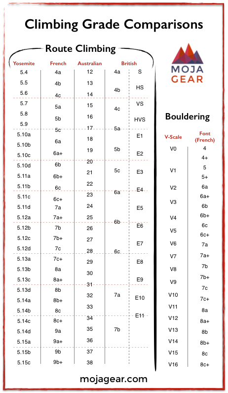

Väčšina telocviční poskytuje požičoné služby, takže zo začiatku netreba nič kupovať, avšak ak vás šport chytí odporúča sa kúpiť si vlastné lezecké topánky, tzv. lezečky a lezecké magnézium. Odporúča sa to z toho dôvodu, že oboje vám vydrží na mnoho vstupov a po čase by cena poplatku za požičanie presiahla kúpnu cenu vlasnej výbavy.
Plusom boulderingu je, že na rozdiel od disciplín s istením nie je potreba zaobstarávať si istiace vybavenie, napr. lezecký postroj, lano, ... . Tieto položky sú totiž násobne drahšie ako celá boulderová výstroj. A tiež zvyšujú aj náklady na požičanie v prípade že nekúpite vlastné.
Výber "leziek" je veľmi komplikovaná téma a takmer každý odporúča niečo iné. Mnohý lezci si kupujú lezky o niekoľko čísel menšie ako ich každodenné topánky, toto im poskytuje lepšiu, miestami až priveľkú oporu chodidiel a spôsobuje bolesť či úrazy. Nových nádejných lezcov by táto bolseť mohla odradiť a preto by som osobne odporúčal kúpiť lezky približne takej veľkosti akú majú veľkosť každodenných topánok, a samozrejme ich treba vyskúšat vo fyzickom obchode pred kúpou. Lezky sa tiež delia podľa typu zapínania, agresivity zahnutia a aj od druhu materiálu. Osobne som na začiatok zvolil cestu neutrálnych, čo najlacnejších leziek a nemôžem povedať, že by som spravil chybu. Neutralita umožňuje skúšať rôzne druhy lezenia, cena znižuje strach opotrebenia a kvalita zaručuje, že si viac dávam pozor na pozíciu nôh.
Po náročnom výbere topánok na nás čaká už iba výber magnézia, tu je debata o čosi jednoznačnejšia, magnézium je skvelé. Dá sa kúpiť v rôznych formách: v tekutej, rozdrvenej alebo kockovej. Na značke skoro vôbec nezáleží, výber je vykonávaný podľa toho ktorú formu človek preferuje. Kocková forma je však najversatilnejšia, vieme ju použiť ako kocku, podrviť časť a máme kombináciu kocky a drte alebo ju úplne rozdrviť. Nevýhodou je oproti kúpe priamo rozdrvenému magnéziu cena na gram, ktorá je zvyčajne značne vyššia. Osobne preferujem polámanú kocku, prípadne rozdrvené magnézium v ponožke.
Výhoda jenoduchosti disciplíny boudlering zaisťuje, že hustota pokrytia Slovenska telocvičňami je väčšia ako u iných disciplín, i keď často sú kombinované pre viac druhov lezenia. Príkladnmi takýchto priestorov sú napríklad Pralez v Nitre, alebo K2 v Žiline i Bratislava.
Ceny za vstup sa síce líšia ale pohybujú sa pre dospelých na úrovni 10€ a pre študentov v priemere o 1 euro menej. Ceny sa taktiež často líšia pre vstupy v pracovných dňoch doobeda a poobede pričom cez víkendy a sviatky sú pre celý deň na úrovni poobednajšieho vstupu cez týždeň. Poplatok za zapožičanie lezečiek a magnézia sa tiež pohybuje na rovnakej úrovni, v K2 3,50€ za lezečky a 1,50€ za magnézium.
Pred prvým vstupom je nutné sa registrovať, či už vyplnením formulára alebo cez vybranú aplikáciu.
V súčastnosti musia v K2 lezci pod 18 rokov musia na mieste vyplniť formulár a ten im musí podpísať zákonný zástupca. Tento formulár môžno nájsť priamo na stránke daného zariadenia, ale obsah bude zväčša rovnaký, ako tento formulár pre K2 Žilina.
Online registrácia pre Pralez i K2 je vykonávaná prostredníctvom systému a aplikácie iClub, ktorá po registrácií bude generovať QR kód ktorým sa pri vstupe preukážete.
Existuje mnoho systémov hodnotenia obťiažností ciest, azda najpoužívanejšia je Francúzska, táto udáva obtiažnosť vo forme kombinácie čísla s písmenom. Obtiažnosť je tým vyššia, čím je vyššia hodnota čísla a písmena k nemu priradeného. V súčastnosti existujú cesty od obtiažnosti 1 až po 9c. Medzi systémami existujú prevodové tabuľky, ako napr. na obrázku. nižšie.
Infromácia o náročnosti cesty býva obvykle vyznačená štítkom zachyteným za jedným zo začiatočných chytov. Tieto chyty možno spoznať podľa pásky ktorá je k nim prilepená, podobným spôsobom sú označené aj koncové chyty, tie sú však umiestnené zvyčajne oveľa vyššie na stene. Možno sa stretnút aj s farebným systémom priraďovania obtiažností.
Hodnotenie nastavujú zvyčajne skupiny tvorcov ciest a teda je z časti subjektívne. Obtiažnosť sa však líši od lezca k lezcovi a ak vás nejaká cesta zaujme určite nehľaďte na jej hodnotenie a hor na sa ňu!
Napriek tomu že náročnosť ciest je veľmi subjektívna vec mnohé telocvične poskytujú z istej miery vlastnú tabuľku klasifikácie bouldrov ich obtiažností. Nižšie je uvedená takáto tabuľka pre Pralez v Nitre.
| Klasifikácia bouldrov | Náročnosť bouldrov |
|---|---|
| Začiatočnícke bouldre | 5A, 5B |
| Ľahké bouldre | 5C, 6A |
| Stredne ťažké bouldre | 6B, 6C |
| Ťažké bouldre | 7A, 7B |
| Super ťažké bouldre | 7C, 8A+ |